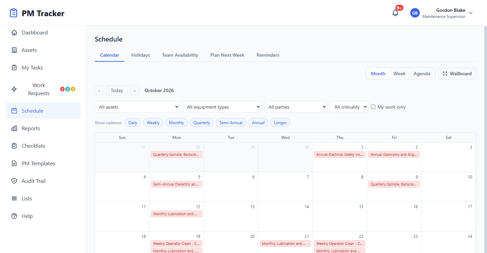

Forge + PM Tracker
Forge + PM TrackerPM Tracker maintenance software
PMs, repairs and machine holds on one auditable record.
A self-hosted maintenance system for manufacturers regulated by the FDA, EMA and Health Canada. It runs on your own server, and the full history stays with you.

From schedule to reviewed record
PM scheduling
Schedule preventive maintenance, with checklists for each task.
Work orders
Work saves as it goes, and supervisors approve it when it's done.
Breakdown requests
Report a breakdown, get it repaired, then send it for QA review.
Machine holds
Hold a machine when needed, and see what's available on one board.
Spare parts
Track the spares your team uses and what's left in stock.
Reports and history
Maintenance cost reports and a printable history for each machine.


Built for regulated plants
Append-only audit trail
Every action is logged and can't be edited afterwards. It's designed to support your validation.
Permissions by role
Access follows each person's level and discipline, such as maintenance or quality.
Self-hosted
Install it on your own server. Licenses are checked locally, so nothing phones home.
Questions we expect
Does PM Tracker need the internet?
Normal operation doesn't depend on any outside service.
Is it validated out of the box?
No. Validation is always specific to your site, and your team owns it. Talk to us about what you need.
Do we need Forge to use it?
No. PM Tracker is sold on its own. It's also the maintenance module inside Forge, for shops that want both in one system.
How much does it cost?
We quote each plant individually. Ask us for a quote.